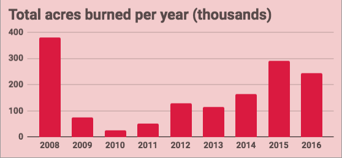

Click each fire for details.
This map shows the total amount of acres burned per year in each California county due to wildfires. Eleven out of the twenty most destructrive wildfires in recorded California history (as of February 2019) have occurred since 2008. At the top of the page, you can filter the data by which counties had the most acres burned in the selected year. This data does not discriminate by cause.
 Source: CAL FIRE Icons: The Noun Project